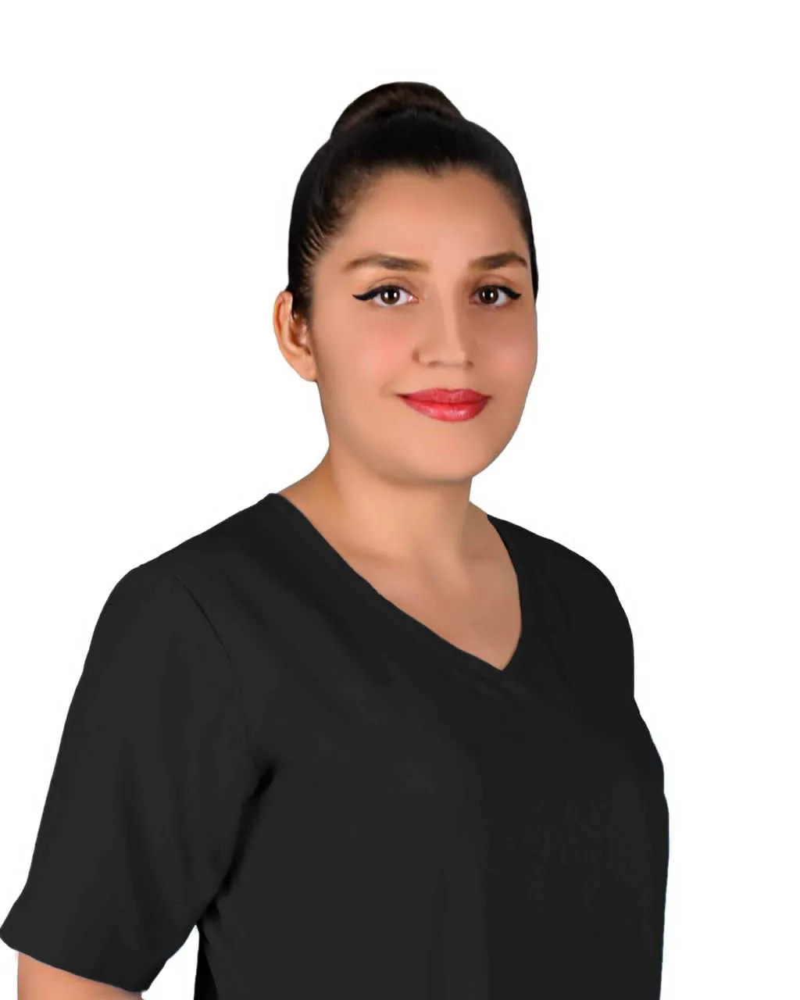
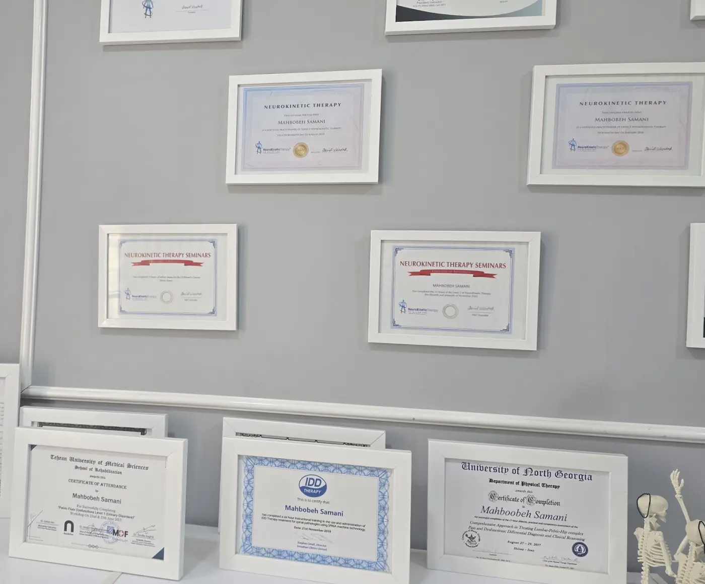

محبوبةساماني

أخصائية علاج طبيعي عظمي، وصاحبة عيادة محبوبة للمفاصل والعمود الفقري في العذيبة. أكثر من عشر سنوات في علاج آلام العضلات والعظام.
نشرت عددًا من المقالات في مجلات طبية دولية، وطوّرت اختراعين خاصين بها في مجال العلاج الطبيعي.
طريقتها في العلاج
تعالج محبوبة طيفًا واسعًا من آلام العضلات والمفاصل، القصيرة والطويلة الأمد. ولها خبرة طويلة في مشاكل الحوض: التبول والإخراج والمشاكل الجنسية والهبوط، لدى الرجال والنساء.
- الإبر الجافة
- الوخز بالإبر للعضلات والعظام
- الوخز التجميلي
- العلاج اليدوي
- العلاج الكهربائي
- العلاج بالتمارين
- التيبينغ
- NeuroKinetic Therapy
ما الذي يميّزنا
- العلاج على يد أخصائية علاج طبيعي عظمي، وهو تخصص نادر في عُمان.
- العلاج بالليزر عالي الطاقة، ولا يتوفر في كثير من عيادات مسقط.
- تقييم مهني شامل قبل بدء العلاج.
- نتابع تقدّمك عن قرب ونبقى معك حتى تتعافى.
- مواعيد مرنة تناسب وقتك.
- باقات علاج بتكلفة مناسبة.
على الجدار
شهاداتها معلّقة في غرفة العلاج. بعضها:
- NeuroKinetic Therapy، ممارِسة معتمدة، المستوى 2يناير 2026
- NeuroKinetic Therapy، ممارِسة معتمدة، المستوى 1أغسطس 2025
- ندوات NeuroKinetic Therapy: المستوى 2، ودورة L3 Master’s عن قاع الحوضندوات NKT
- IDD Therapy: علاج مشاكل العمود الفقري بجهاز SPINAنوفمبر 2019
- منهج شامل لآلام أسفل الظهر والحوض والورك، جامعة نورث جورجيا، قسم العلاج الطبيعيأغسطس 2017


احجز تقييمك الأول.
بناية 497، شقة 1، شارع 18 نوفمبر، العذيبة، قرب الفير هايبرماركت. السبت إلى الخميس، 10 صباحًا – 8 مساءً.